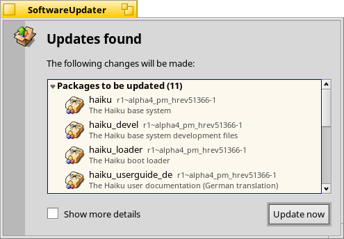

SoftwareUpdater
SoftwareUpdater
| Barra de escritorio: | ||
| Ubicación: | /boot/system/apps/SoftwareUpdater | |
| Configuraciones: | ~/config/settings/SoftwareUpdater_settings |
SoftwareUpdater revisa todos los repositorios activos (vea las Preferencias de Repositorios) para actualizaciones a paquetes instalados, incluyendo actualizaciones de sistema en el propio Haiku. Descarga e instala las actualizaciones disponibles de una vez.
Luego de iniciarlo, SoftwareUpdater revisa por actualizaciones a paquetes y los muestra en una lista con su nueva versión y una descripción corta. Puede optar a para incluir el nombre del repositorio para cada paquete y mostrar tanto la versión de paquete anterior y la nueva.
iniciará la descarga de todos los paquetes y su instalación subsiguiente.
Dependiendo de los paquetes que fueron actualizados, puede que deba reiniciar Haiku para completar el proceso de actualización. Las aplicaciones actualizadas normalmente sólo requieren ser reiniciadas, mientras que los cambios al propio Haiku pueden requerir reiniciar todo el sistema para que tomen efecto.
Cada vez que se actualizan, instalan o desinstalan paquetes (ya sea con SoftwareUpdater/HaikuDepot o a través de Terminal con pkgman), el sistema guarda un "estado" nuevo en /system/packages/administrative/. Esto permite arrancar en cualquier estado anterior desde las Opciones de arranque, lo que hace que sea más fácil resolver problemas derivados de la instalación o actualización de un paquete que no funciona como debería.
Dado que estas carpetas de "estado" almacenan copias de los paquetes actualizados o desinstalados, con el pasar del tiempo el tamaño de la carpeta "administrative" puede crecer considerablemente. Hasta que haya una opción que realice una limpieza automática, es buena idea monitorear de vez en cuando el tamaño de la carpeta "administrative" y eliminar los estados más antiguos, esos en los que probablemente no vuelva a arrancar.
Devolver Haiku a una versión anterior
Si bien es raro, es posible que una actualización a la última versión de Haiku ("hrev") traiga consigo una regresión que perjudique la experiencia del usuario. En este caso, puede cargar un estado anterior que funciona correctamente desde el menú de opciones de arranque (véase Cargador de arranque - Resolución de problemas). Ubíquese en el último estado que funciona correctamente y arranque en él.
Para regresar permanentemente a esta versión, debe configurar el repositorio Haiku para que apunte a ese hrev específico. Puede encontrar la versión actual en "Acerca de Haiku" en la barra de escritorio. Por ejemplo, para regresar a hrev56231, abra una Terminal y ejecute:
pkgman add https://eu.hpkg.haiku-os.org/haiku/master/$(getarch)/r1~beta3_hrev56231 pkgman full-sync
Tenga en cuenta que ahora su sistema está retenido en esa versión y Haiku no recibirá nuevas actualizaciones. En este punto, informe la regresión y ayude a arreglarla si es posible. Una vez que se haya arreglado —puede comprobarlo al revisar los registros de commit— puede volver a la forma "actual" del repositorio ejecutando:
pkgman add https://eu.hpkg.haiku-os.org/haiku/r1beta3/$(getarch)/current pkgman full-sync